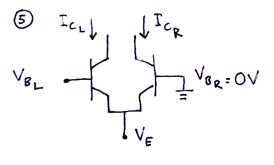
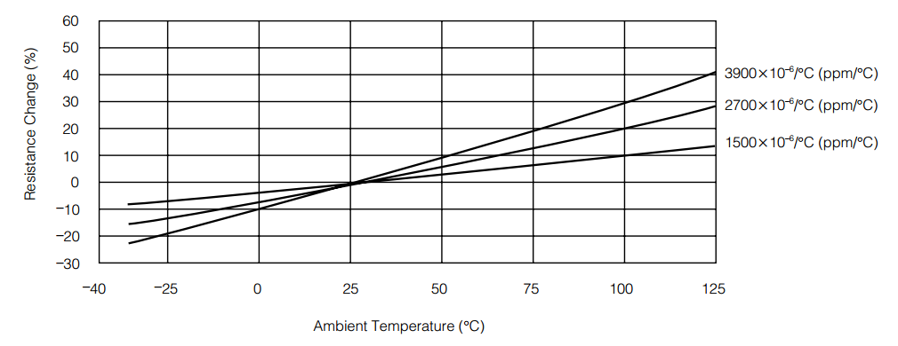

$I_s$ is the big bad wolf when it comes to exponential conversion using a transistor. The way to get rid of $I_s$ is, as you may have seen around the web, to use two NPN transistors connected together instead of just one. These should idealy be matched and on the same piece of silicon in order to have the same $I_s$ and to be thermally coupled (always at the same temperature).
But why and how does this circuit remove the dependency on $I_s$?
René Schmitz included a paragraph on this in his "A tutorial on exponential convertors and temperature compensation". While he shows the most important results and tries to explain the method in a more intuitive way, he intentionally leaves out much of the transistor theory and mathematics behind the circuit and formula.
I have tried to recreate the missing pieces to understand how it all comes about. This whole document should be seen as an elaboration on Schmitz' article. It is not enough to read this document to create a working, stable exponential converter, but it may help you understand a bit more.
The road to fully understanding what is going on is littered with mathematics and has a few steps that you may not immediately see the reason for. I have included the intermediate steps in all formulas, but they are initially hidden to improve readability. Just click on show/hide details and they will appear. Now let's start with the basics.
As we start off, it is important to realize that for the transistor, the collector current $I_c$ is determined not by the base current $I_b$ but by the base-emitter voltage $V_{be}$. The relation between $I_c$ and $V_{be}$ can be approximated by the Ebers Moll equation.
The Ebers Moll equation, as mentioned, can be written as
\(I_c = I_s \cdot e^{\frac{V_{be}}{V_T}}\)
given that $I_s$ is much smaller than $I_c$. Solving the equation for $V_{be}$ gives us
\(ln(I_c) = ln(I_s \cdot e^{\frac{V_{be}}{V_T}}) = ln(I_s) + ln(e^{\frac{V_{be}}{V_T}})\)
\(ln(I_c) = ln(I_s) + \frac{V_{be}}{V_T}\)
\(\frac{V_{be}}{V_T} = ln(I_c) - ln(I_s)\)
and finally
\(V_{be} = V_T \cdot [ln(I_c) - ln(I_s)]\)
Let us now assume that we can keep the collector current $I_c$ constant (using a current source). Since $I_s$ is also constant at a constant temperature, this leads us to the conclusion that:
The base-emitter voltage $V_{be}$ must be constant if $I_c$ is constant.
And thus
If $I_c$ is constant and we change the base voltage $V_b$ with a value $\Delta V_b$, the emitter voltage $V_e$ will change with the same amount independent of the initial value of both $V_b$ and $V_e$.
Example:
Assuming we have these initial conditions:
\(V_b = 1V, V_e = 0.4V\)
If we increase $V_b$ by 18mV, we end up with
\(V_b = 1.018V, V_e = 0.418V\)
Now let's see what happens when we connect two transistors at the base, like the one you can see in all VCO diagrams out there. The collector current of transistor 1, $I_{c_1}$ is still assumed to be constant.
When the transistors have the emitters connected together, they must also have the same $V_e$ at all times.
From the previous discussion, we know that if we change $V_b$ by an amount $\Delta V_b$, we also change $V_e$ by the same amount. Since our two transistors are connected at the emitter, changing the base voltage of transistor 1, $V_{b_1}$ will change the emitter voltage $V_e$ for BOTH transistors.
Now connect the base of transistor two to ground so that $V_{b_2} = 0V$ at all times. What will happen when we change $V_{b_1}$?
Well, we just said that changing $V_{b_1}$ by $\Delta V_b$ would also change $V_{e}$ by $\Delta V_b$. But what about $V_{b_2}$? It cannot go anywhere as it is stuck at $0V$. This, of course, means that the base-emitter voltage for transistor 2, $V_{be_2}$ increases by $\Delta V_b$.
Remember, $V_{be_1}$ is unchanged. Thus, $V_{be_1}$ and $V_{be_2}$ are no longer equal, and the difference between them is $\Delta V_b$.
When transistor 2 has its base grounded, changing $V_{b_1}$ by $\Delta V_b$ will also change $V_{be_2}$ by $\Delta V_b$.
When transistor 2 has its base grounded, the difference between $V_{be_1}$ and
$V_{be_2}$ is -$V_{b_1}$:
\(\Delta V_{be} = V_{be_2} - V_{be_1} = V_{b_{2}} - V_e - (V_{b_1} - V_e) = -V_{b_1}\)
Given the initial condition:
$V_{b_1} = 0V$
As $V_{b_1}$ and $V_{b_2}$ are both at $0V$, their base-emitter voltages will be the same. Let's call it $V_{be_{initial}}$
If we lower $V_{b_1}$ to $-18mV$, $V_e$ will also drop by $18mV$* (*BY 18mV, not TO 18mV mind you).
Because $V_{b_2}$ cannot change we now have
\(V_{be_2} = V_{be_{initial}} -18mV\)
NB: Even if we did NOT choose $V_{b_1} = 0V$ as an initial condition (which means that the initial base-emitter voltages would be different for the two transistors), we would still get that $V_{be_2}$ would have changed by -18mV.
So trick 1 is that changing the base voltage of transistor 1 will lead to a change in the base-emitter voltage of transistor 2. This in turn changes the $I_c$ pf transistor 2. Big deal, so what?
Oh, but here is where it gets exiting. Enter Trick 2.
Time to get rid of $I_s$! This trick explains why the dual transistor configuration described above makes the the troublesome, temperature dependant $I_s$ disappear.
We just stated that
\(\Delta V_{be} = V_{be_2} - V_{be_1}\)
and earlier we showed that Ebers Moll can be written as
\(V_{be} = V_T \cdot [ln(I_c) - ln(I_s)]\)
This means that we can write $\Delta V_{be}$ as
\(\Delta V_{be} = V_T \cdot [ln(I_{c_2}) - ln(I_s)] - V_T \cdot [ln(I_{c_1}) - ln(I_s)]\)
\(\Delta V_{be} = V_T \cdot [ln(I_{c_2}) - ln(I_s) - ln(I_{c_1}) + ln(I_s)]\)
\(\Delta V_{be} = V_T \cdot [ln(I_{c_2}) - ln(I_{c_1})]\)
\(\Delta V_{be} = V_T \cdot ln(\frac{I_{c_2}}{I_{c_1}})\)
The difference between the base-emitter voltages of the two transistors can be written as \(\Delta V_{be} = V_T \cdot ln(\frac{I_{c_2}}{I_{c_1}})\)
Wow! Did you see that? $I_s$ just magically disappeared! Ah, but so it did in the explanation of the basic exponential converter as well, and that didn't help us much back then, did it?
In fact, this time it does. Last time, the initial value of the output current $I_c$ depended on $I_s$ through the Ebers-Moll equation. But let's see what happens if we solve the equation above for what is now the output current, $I_{c_2}$:
\(\Delta V_{be} = V_T \cdot ln(\frac{I_{c_2}}{I_{c_1}})\)
\(ln(\frac{I_{c_2}}{I_{c_1}}) = \frac{\Delta V_{be}}{V_T}\)
\(\frac{I_{c_2}}{I_{c_1}} = e^{\frac{\Delta V_{be}}{V_T}}\)
and finally
\(I_{c_2} = I_{c_1} \cdot e^{\frac{\Delta V_{be}}{V_T}}\)
As $I_{c_1}$ is constant, we'll call it $I_{ref}$.
$I_{c_2}$ will be used to control the vco core, so let's call it $I_{core}$:
\(I_{core} = I_{ref} \cdot e^{\frac{\Delta V_{be}}{V_T}}\)
This time, $I_{core}$ only depends on $\Delta V_{be}$* (*and $V_T$ which also varies a little with temperature as we have seen eariler). $I_{ref}$ is still presumed to be constant. Since $\Delta V_{be}$ is equal to $-V_{b_1}$ when the base of transistor two is at $0V$, we get a superb, usable formula:
The output current $I_{core}$ can always be found as a function of the base voltage of the first transistor:
\(I_{core} = I_{ref} \cdot e^{\frac{-V_{b_1}}{V_T}}\)
In much the same way as we did for the basic exponential converter, we can now figure out how much $V_{b_1}$ needs to change to double $I_{core}$.
Solving for $V_{b_1}$ gives us
\(\frac{I_{core}}{I_{ref}} = e^{\frac{-V_{b_1}}{V_T}}\)
\(ln(\frac{I_{core}}{I_{ref}}) = \frac{-V_{b_1}}{V_T}\)
\(V_{b_1} = -V_T \cdot ln(\frac{I_{core}}{I_{ref}})\)
The change in $V_{b_1}$ that causes a doubling of $I_{core}$ can then be written as
\(\Delta V_{b_1} = -V_T \cdot ln(\frac{2 I_{core}} {I_{ref}}) - (-V_T \cdot ln(\frac{I_{core}} {I_{ref}}))\)
and be simplified to
\(\Delta V_{b_1} = -V_T \cdot [ ln(\frac{2 I_{core}} {I_{ref}}) - ln(\frac{I_{core}}
{I_{ref}})]\)
\(\Delta V_{b_1} = -V_T \cdot ln(\frac{\frac{2 I_{core}} {I_{ref}}}{\frac{I_{core}}
{I_{ref}}})\)
\(\Delta V_{b_1} = -V_T \cdot ln(\frac{2 I_{core}}{I_{core}})\)
The change in base voltage of the first transistor that is necessary to double the output current $I_{core}$ is:
\(\Delta V_{b_1} = -V_T \cdot ln(2)\)
which, incidently is the same result as we saw for the basic exponential converter, meaning that the voltage necessary to double $I_{core}$, \(\Delta V_{b_1} = 17.5mV\) at $20°C$.
TODO: comment on why it is reversed - and thus is -17.5mV, not 17.5mV. CORRECT EVERYTHING FROM HERE ON OUT!
The second temperature dependent part of the exponential converter is found in the exponential factor. and is guilty of streching or compressing the scale as the temperature changes. Though the math here is much simpler and the solution is no big trick like the previous one, it is in practice also hard to get completely right.
From Ebers Moll we get that
\(I_c = I_s \cdot e^{\frac{V_{be}}{V_T}}\)
and we've already seen how $I_s$ is temperature dependent. From a previous chapter we know that
\(V_T = \frac{k \cdot T}{q}\)
where
\(k = 1.38 \cdot 10^{-23}\) Joules/Kelvin
\(q = 1.6 \cdot 10^{-19}\) Coloumbs
\(T = \) absolute temperature in degrees Kelvinq (= degrees celcius + 273.16)
From this we can calculate the change in $V_T$ that occurs when the temperature increases one degree:
Let \(V_{T_0} = \frac{k \cdot T}{q}\) be the initial voltage
We now have that the voltage increase is
\(\Delta V_T = V_{T_1} - V_{T_0} = \frac{k}{q} \cdot (T + 1) - \frac{k}{q} \cdot T = \frac{k}{q}\)
\(\Delta V_T = \frac{1.38 \cdot 10^-23 J/K}{1.6 \cdot 10^-19 C} = 86.25 \mu V \)
In other words, the temperature dependency of $V_T$ can be expressed as follows:
A temperature increase of 1 degree leads to an 86.25 $\mu V$ increase in $V_T$
From earlier, we know that the change in $V_{be}$ that is required to double the frequency of the VCO is
\(\Delta V_{be} = V_T \cdot ln(2)\)
When the temperature increases by one degree, this changes to
\(\Delta V_{be} = (V_T + \Delta V_T) \cdot ln(2) = V_T \cdot ln(2) + \Delta V_T \cdot ln(2)\)
Thus, the increase in temperature by one degree leads to a change in $\Delta V_{be}$ of \(\Delta V_T \cdot ln(2) = 86.25 \mu V \cdot ln(2) = 59.78 \mu V \)
A temperature increase of 1 degree leads to a $59.78 \mu V$ increase in the value of $\Delta V_{be}$ required to double the frequency.
Ok, so let's recap what we know:
- We want the VCO to double it's frequency when the input is increased by 1V
- At 20 degrees, the exponential converter doubles it output whenever the input is increased by $17.5 mV$
- The voltage necessary to double the output increases with $59.78 \mu V$ per degree the temperature rises.
To achieve the first goal, we simply use a resistor voltage divider. By selecting an appropriate ratio, we are able to convert 1V into 17,5mV.
The formula for such a divider is:
\(V_{out} = V_{in} \cdot \frac{R_2}{R_1 + R_2} \)
For once I won't go into how to solve this, but needless to say there are many combinations that will work. A common one is
$R_1 = 56kOhm$
$R_2 = 1kOhm$
which gives us
\(V_{out} = 1V \cdot \frac{1kOhm}{56kOhm + 1kOhm} = 17.5438mV\)
Fairly close to the ideal $17.5mV$ I'd say, the rest may be adjusted in the pitch CV summer circuit, making it output just slightly more than 1V per octave. But what about the voltage offset when the temperature increases? At 30 degrees we need \(17.5mV + 10°K \cdot 0.06 mV/°K = 18.1 mV\) to double the frequency?
Well, looking at the voltage divider, it should be clear that if we could increase the value of $R_2$ as the temperature increases, we would be able to also increase the voltage. For example, if $R_2$ was changed to a $2kOhm$ resistor, the output would be
\(V_{out} = 1V \cdot \frac{2kOhm}{56kOhm + 2kOhm} = 34.48mV\)
Fortunately, such a device exists. It's called a tempco resistor and its resistance increases linearly with temperature. There are however many different ones with different rates of increasing resistance, so how do we know which one to use? We'll get to that shortly, but first a little about this type of resistor.
The tempco, or temperature correction resistor, is a resistor with a resistance that changes with temperature. The rate of change is often specified as for example 3300 ppm (parts per million) per °C, which means that its resistance changes by a factor of \(3300 \cdot 10^{-6} / °C\).
To find the resistance of a resistor with a ppm of P at a given temperature, you can use the following formula
\(R_{T_x} = R_{T_{initial}} \cdot (1 + P \cdot 10^{-6} \cdot x)\)
where
$P$ is the temperature coefficient in parts per million
$R_{T_{initial}}$ is the resistance at the initial temperature
$x$ is the number of degrees celcius the temperature has changed from the initial
$R_{T_x}$ is the resistance at the changed temperature.
Example:
A 3300 ppm/°C resistor with a resistance of $1kΩ$ at $25°C$ will have a resistance of
\(1kΩ \cdot (1 + 3300 \cdot 10^{-6} / °C \cdot 5°C) = 1.0165kΩ\)
when the temperature is raised 5 degrees to 30°C.
The change is normally completely linear within the temperature range a synth operates. The "initial value", the value of the resistor in the datasheet/shop, is usually the resistance at room temperature ($25°C$) but you should probably check the data sheet for the resistor to confirm this. NBNBN: Is this a lie?????: It does not really matter that much since you will tune the VCO at one temperature and since the rate of change is constant, independently of the starting temperature, the temperature correction will still work.
This graph, from a Panasonic datasheet shows how the factor (temperature coefficient) changes for different ppm values

Finding the correct ppm value for the $R_2$ resistor is just a matter of calculating how much we need to change the resistor value to get the correct voltage change when we increase the temperature by one degree. Dividing this value by the initial $R_2$ value gives us the coefficient.
By rearranging the voltage divider formula we get
\(V_{out} = V_{in} \cdot \frac{R_2}{R_1 + R_2} \)
\(V_{out} \cdot (R_1 + R_2) = V_{in} \cdot R_2 \)
\(V_{out} \cdot R_1 + V_{out} \cdot R_2 = V_{in} \cdot R_2 \)
\(V_{out} \cdot R_2 - V_{in} \cdot R_2 = -V_{out} \cdot R_1\)
\((V_{out} - V_{in} ) \cdot R_2 = -V_{out} \cdot R_1\)
and finally
\(R_2 = \frac{-V_{out} \cdot R_1}{(V_{out} - V_{in} )}\)
Lets try this on our previous voltage divider. At our initial temperature $R_2$ is $1kΩ$ and it outputs $17.5438mV$. Increasing the temperature by 1 degree meant we had to add 59.78μV, so the new output value is $17.6036mV$
Inserting this into the formula above, we get
\(R_2 = \frac{-17.6036mV \cdot 56kΩ}{(17.6036mV - 1000mV)} = \frac{-985.80mV\cdot kΩ}{-982.40 mV} = 1.00346kΩ\)
This means that as we increase the temperature by one degree, our 1kΩ resistor must increase to a 1.00346kΩ one. The relation between them is
\(\frac{1.00346kΩ}{1kΩ} = 1.00346\)
We know that the coefficient can be written as \(1 + P \cdot 10^{-6}\), which means that
\(1 + P \cdot 10^{-6} = 1.00346\)
\(P \cdot 10^{-6} = 1.00346 - 1\)
\(P = \frac{0.00346}{10^{-6}}\)
and finally
\(P = 3460\)
in other words, we need to select a 1k resistor with a coefficient of 3460 ppm/°C. In practice this means you will have to use a 3300 ppm/°C or 3500 ppm/°C resistor as they only come in certain values.
The more observant of you may have noticed a little ommitance in the previous discussion. Since we have $R_2$ in both the dividend and the divisor of the voltage divider formula, the change in the output voltage will not be completely linear even if the change in the resistor value is linear, i.e. it won't change by exactly \(59.78 \mu V\) per degree as the temperature increases. However, since $R_1$ is so much larger than $R_2$, this inaccuracy is mostly neglectable.
Example:
Going from 20 to 30 degrees should ideally give us a voltage increase of \(10 \cdot 59.78 \mu V = 597.8 \mu V\). If we started at 17.5438mV the new output voltage would then have to be $18.1416 mV$.
Correspondingly, the resistance changes from 1k to
\( 1kΩ \cdot (1 + 0.00345/°C \cdot 10°C) = 1.0346kΩ\)
which in turn means that the real output voltage is
\(V_{out} = 1V \cdot \frac{1.0346kΩ}{56kΩ + 1.0346kΩ} = 18.1399mV\)
This is quite accurate and is probably outweighed by other component inaccuracies, not least because you must buy either a 3300 ppm or a 3500 ppm resistor.